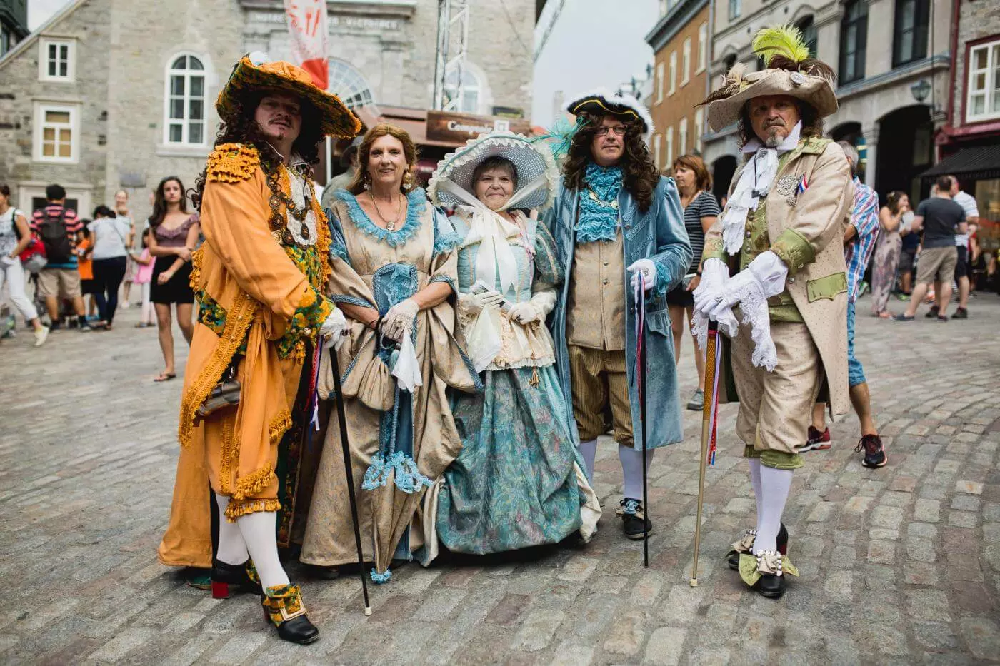
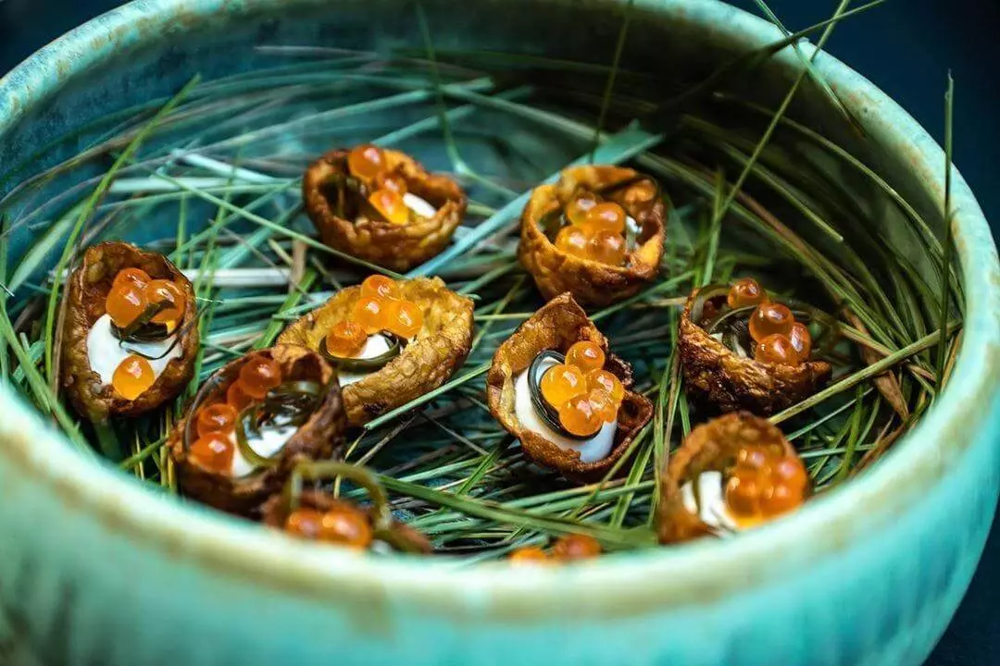
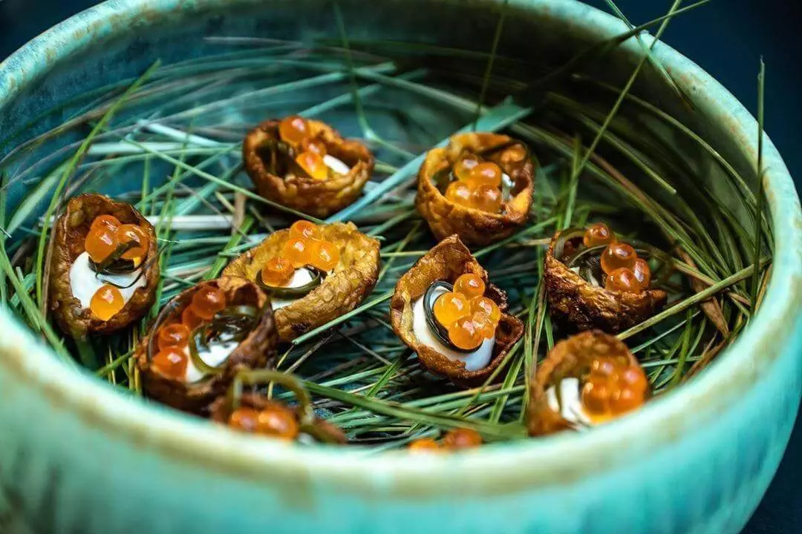
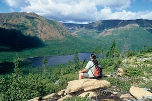
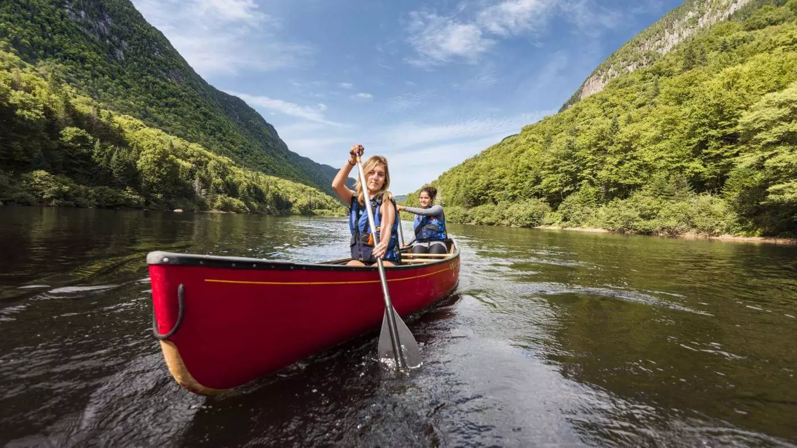

Culture unique au Canada
La réputation de peuple chaleureux des Québécois n’est plus à faire. Partout, vous serez accueilli avec un grand sourire. Ici les gens sont heureux et fiers de leur culture francophone en Amérique. Québec regorge d’activités et d’attractions qui témoignent d’une richesse culturelle bien vivante et authentique.

Hiver féérique
La ville de Québec révèle ses plus beaux charmes sous la neige. La féérie et le romantisme sont magnifiés par le tapis blanc et les décorations lumineuses. Pendant le temps des fêtes, le Vieux-Québec est tout simplement magique. Faites comme les gens de Québec et profitez d’une tonne d’activités hivernales amusantes. Visitez le seul Hôtel de Glace en Amérique du Nord et goûtez aux joies de la neige garantie en abondance. Il suffit d’être chaudement habillé et le plaisir de la neige est à vous!


Gastronomie de classe mondiale
Grâce à la passion débordante de ses chefs émergents et établis, la scène gastronomique de Québec s’anime jour après jour. Ces artistes de la table réinventent avec doigté les classiques et développent de nouvelles tendances, mettant en valeur la proximité et les richesses du terroir local. Québec se distingue par la diversité de ses expériences culinaires, son accueil incomparable ainsi que ses influences françaises, britanniques, nord-américaines et autochtones.
 

Pour la nature et les grands espaces verts
Imaginez un territoire de près de 10 millions de km2… avec 2 fois moins de population que la France. Grands espaces, nature omniprésente, faune exceptionnelle… Si vous voulez vivre une expérience forte et vous ressourcer dans les bras de Dame Nature, vous êtes au bon endroit. Le sentiment de liberté n’est pas une simple expression ici, c’est vraiment ce qu’on ressent en parcourant ce grand et magnifique pays. Et ça fait beaucoup de bien au corps et à l’esprit…

